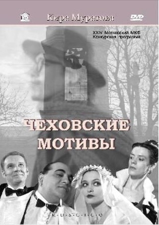

Chekhov's Motifs
In brief
Two Chekhov stories are transplanted into present-day Russia in a black-and-white fantasy.
- Directed by
- Kira Muratova
- Original title
- Chekhovskie Motivy
- Country
- Russia
- Year
- 2002
- Running time
- 120 minutes
- Premiere
- US Premiere
- With
- Sergei Bekhterev, Nina Ruslanova, Natalya Buzko, Philip Panov
- Screenings
- Sun Oct 6, 4:30 PM, Rafael
Wed Oct 9, 6:45 PM, Rafael
Source: Film notes (page 5 of the PDF): Wayback Machine copy; Poster from Wikipedia (ru): Чеховские мотивы (фильм)